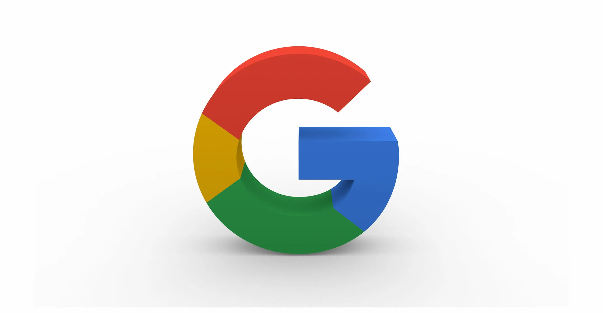

Google LLC (МФА [ɡuːɡl][6][7], MWCD[англ.] /ˈgü-gəl/[8], по-русски: «Гугл»[9][10]) — транснациональная корпорация из США в составе холдинга Alphabet, инвестирующая в интернет-поиск, облачные вычисления и рекламные технологии. Google поддерживает и разрабатывает многочисленные интернет-сервисы и продукты (см.: Список сервисов и
1 Элемент
2 Элемент
Поисковая система Google появилась в январе 1996 года как научно-исследовательский проект двоих студентов — Ларри Пейджа и Сергея Брина, которые тогда учились в Стэнфордском университете в Калифорнии[27]. Хотя обычные поисковые системы в те времена сортировали поисковую выдачу по тому, сколько раз искомые термины упоминались на странице, Пейдж и Брин размышляли над лучшей системой, которая анализировала бы отношения между сайтами[28]. Они назвали эту новую технологию PageRank, актуальность сайта в ней определяется количеством и важностью страниц, которые ссылаются на сайт[29][30]. К этому времени уже существовала небольшая поисковая система RankDex от IDD Information Services, разработанная Робином Ли, которая с 1996 года уже изучала аналогичную стратегию для ранжирования страниц[31] (технология RankDex была запатентована[32] и использована в дальнейшем, когда Ли основал Baidu в Китае[33][34]). Пейдж и Брин изначально назвали свою поисковую систему BackRub, потому что система проверяла обратные ссылки для оценки важности сайта[35][36][37]. В конце концов они изменили название на Google — ошибочное написание слова «гугол» (англ. googol). Ошибка была допущена при поиске слова в реестре доменных имён. Получившееся название пришлось по душе основателям. К тому же домен google.com (в отличие от googol.com) оказался свободен[38][39]. Один из основателей Sun Microsystems — Андреас Бехтольсхайм[англ.] после представления Брином возможностей поисковика выписал чек на сумму 100 тысяч долларов на имя ещё не существующей компании Google Incorporated — именно так инвестор со слуха записал название поисковой системы. Чтобы получить деньги в банке, необходимо было именно под этим названием зарегистрировать фирму, что и было сделано позднее 4 сентября 1998 года. Уставной капитал был заявлен в 1 миллион долларов[40]. Гугол — это число, состоящее из единицы и ста нулей — 1×10100. Позднее в рекламной кампании было заявлено, что оно было выбрано, чтобы показать, что поисковая система хочет обеспечить людей большим количеством информации[41]. Первоначально Google работала на сайте Стэнфордского университета и имела домен google.stanford.edu[42]. Доменное имя для Google было зарегистрировано 15 сентября 1997 года[43], а компания была зарегистрирована 4 сентября 1998 года. Она была расположена в гараже подруги основателей (Сьюзен Воджиски[27]) в Менло-Парке (штат Калифорния). Крейг Сильверстейн, их однокурсник, был нанят в качестве первого сотрудника[27][44][45].
Первым финансированием для Google были 100 тысяч долларов от Энди Бехтольшейма, одного из основателей «Sun Microsystems», полученные в августе 1998 года ещё до регистрации компании[46]. В начале 1999 года, будучи ещё аспирантами, Брин и Пейдж решили, что их поисковая система слишком сильно отвлекает их от учёбы. Они предложили главе «Excite» Джорджу Беллу купить её за миллион долларов, но он отверг предложение. 7 июня 1999 года было объявлено о раунде финансирования в размере 25 миллионов долларов[47] с такими крупными инвесторами, как венчурные компании «Kleiner Perkins» «Caufield & Byers» и «Sequoia Capital»[46][48][49]. Первичное публичное предложение (IPO) Google состоялось пять лет спустя, 19 августа 2004 года. Компания предложила 19 605 052 акций по цене 85 долларов за акцию[50][51]. Акции были проданы через онлайн-аукцион уникального формата, организованный андеррайтерами сделки «Morgan Stanley» и «Credit Suisse»[52][53] Выручка от IPO в 1,67 миллиарда долларов означала, что рыночная капитализация «Google» составила более 23 миллиардов долларов[54]. Подавляющее большинство из 271 млн акций остались под контролем «Google», и многие сотрудники «Google» мгновенно стали миллионерами — владельцами ценных бумаг. Компания «Yahoo!», конкурент «Google», также получила выгоду, поскольку владела 8,4 млн акций «Google» до проведения IPO[55]. 31 октября 2007 года стоимость акций достигла 700 долларов[56], в первую очередь из-за большого объёма продаж и размеров доходов на рынке онлайн-рекламы[57]. В настоящее время компания указывается на бирже NASDAQ под тикером GOOG и на Франкфуртской фондовой бирже под тикером GGQ1.